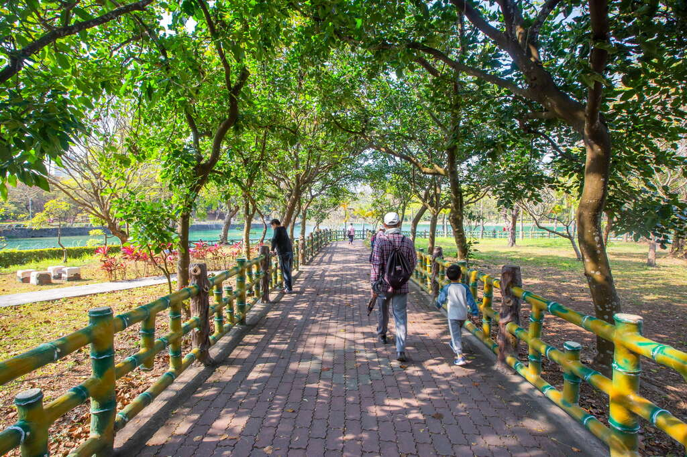
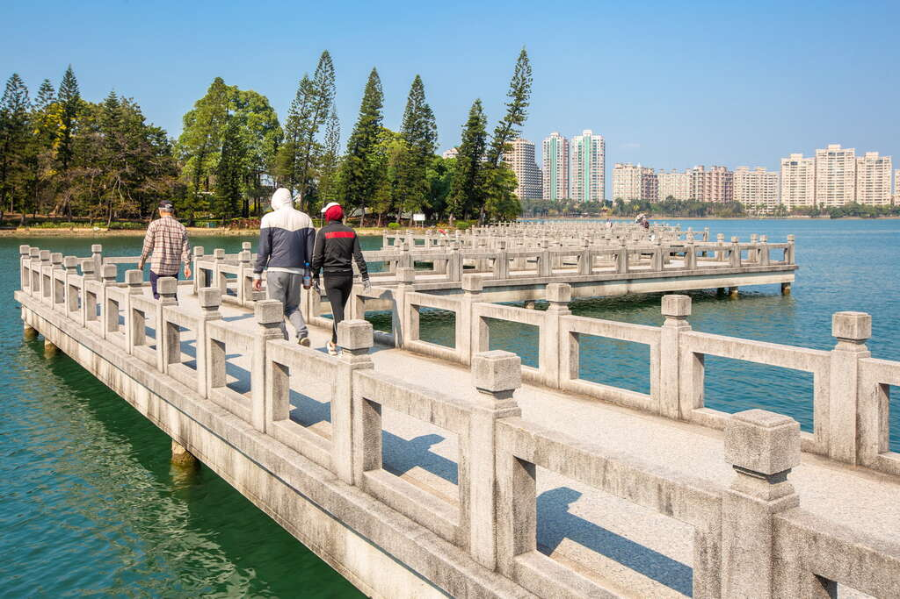
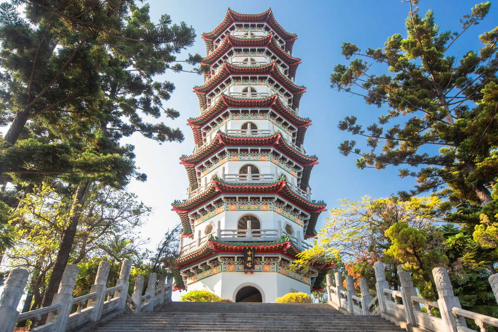
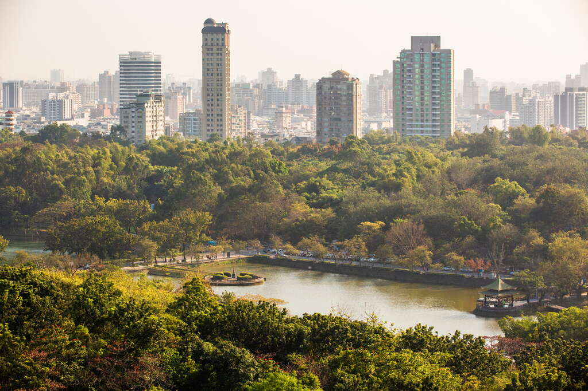
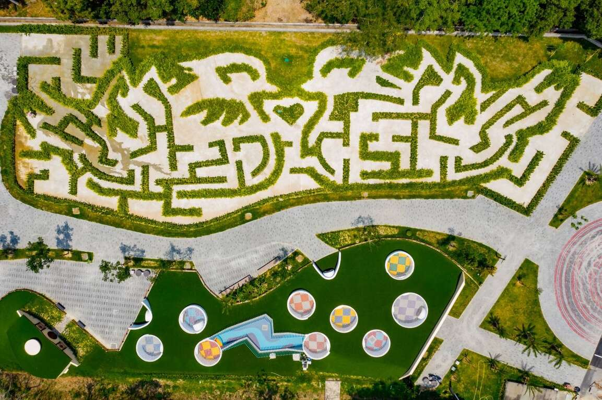
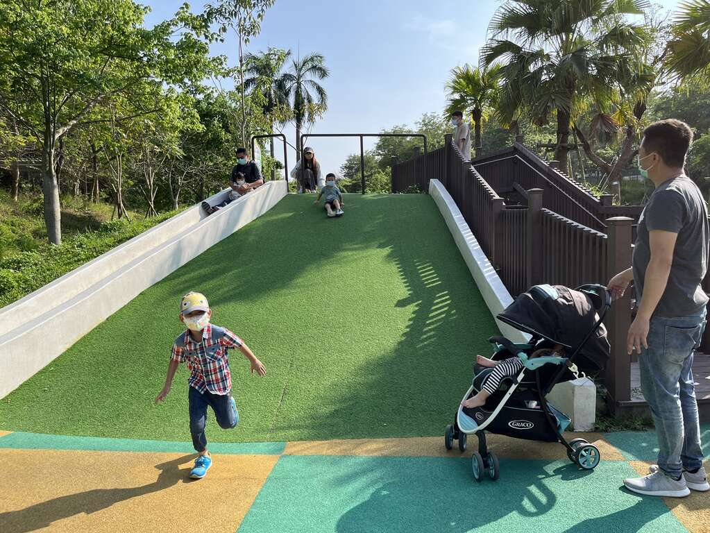
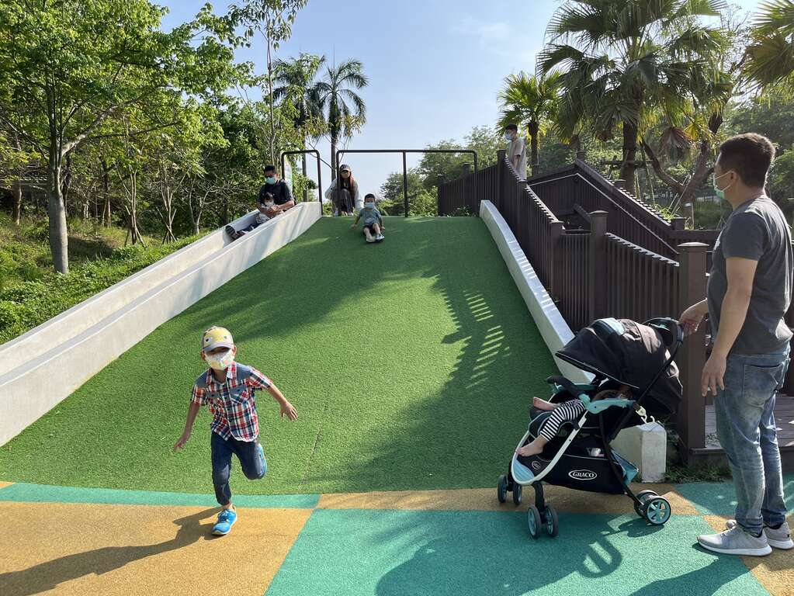

位在鳥松區的澄清湖占地遼闊，原為曹公圳的灌溉埤塘，是高雄市的第一大湖，以三橋、六勝、八景為著名景點，園區設有7公里的環湖步道、青年活動中心，提供旅人體驗野營、從事各種戶外運動遊戲的絕佳場所。走在沿著湖面圍繞的環湖路線，沿途欣賞點綴其間的亭台樓閣，而自然生態豐富的園區，總吸引過境的水鳥，讓人能夠賞鳥、享受風景宜人、恬靜淡泊的休閒度假好去處。
全長230公尺的九曲橋，以曲折有緻的九彎橋身為澄清湖畫上美麗豐富的層次。當旅人漫步橋上欣賞湖光山色時，潔白玲瓏的橋身倒映於碧綠湖水上，成為澄清湖最迷人的風景，尤其月明時刻，皎潔月影倒映粼粼湖水，因而贏得八景之一「曲橋釣月」的美名。
順著步道而行，不時可見醒目的中式高塔，中興塔是澄清湖中最高的建築，潔白的塔身、紅色的拱頂，7層樓高的八角型中式寶塔，屹立於澄清湖的樹海之中亮麗而醒目。
塔內有雙層迴旋式石梯169級，登高望遠不僅將湖區美景盡收眼底，還能眺望市區的高樓大廈都市景色，隱約可見高雄港船隻的海港風光。
榮獲2022建築景觀類園冶獎肯定，成全台最大的生態迷宮花園，從上空鳥瞰為一對鴛鴦心心相印的造型，內部設置各種親子闖關設施，是近期最夯的親子旅遊首選。
電影《魔戒》為發想的哈比屋，夢幻童話場景不用出國即可體驗；還有以下水道巨型涵管組成的五彩繽紛涵管迷宮，達120公分高，孩子彷彿變身電玩裡的超級瑪利歐，可在涵管中自由探索。在涵管的周遭，則是以廣闊綠地的空間設計，讓休憩用餐之際又可接近大自然，孩子在磨石子溜滑梯及草皮上盡情玩樂。
 
